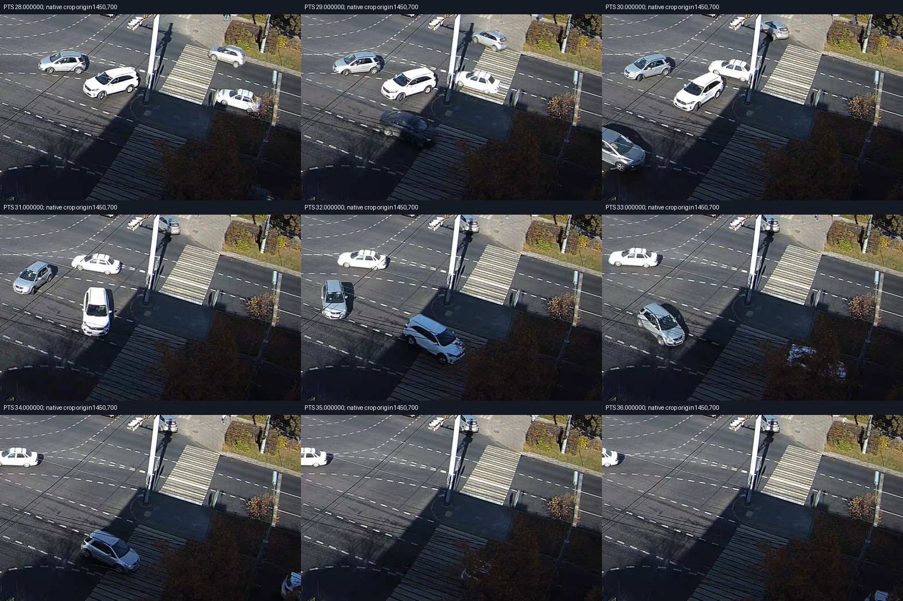

Пользователь подтвердил: машина в розовой рамке выполняет E→_E и ждёт поток W→_E. Поэтому её остановка не доказывает красный свет на E. Это наблюдение сохранено отдельно от назначения видимой головы E.
На новых соседних кадрах серебристая машина слева в вырезке сохраняет положение ожидания на PTS28/29с; на30–33с уже заметно завершает манёвр; на34–35с уезжает вниз вправо. Консервативная граница начала заметного движения29–30с не является известным моментом отпускания тормоза. Второй человек границу ещё не проверял.

В JSON у кандидата7 тот же E→_E и характерное ожидание, затем ускорение. Однако совпадения одного манёвра недостаточно для принятия сдвига и скорости часов. Первоначальное начало относительной шкалы JSON было гипотезой; малые ошибки обучения геометрии уже не прошли независимый контроль. Новая подгонка не запускалась.
Первая колонка — старая условная шкала относительно1740300628994мс, это не установленный PTS видео. Единицы и сглаживание скорости здесь не переинтерпретируются. Числа не используются как точное время физической остановки/старта.
| Условное время, с | detections.millis | Переданное speed |
|---|---|---|
| 12.000 | 1740300640994 | None |
| 12.174 | 1740300641168 | None |
| 12.280 | 1740300641274 | None |
| 12.401 | 1740300641395 | None |
| 12.687 | 1740300641681 | None |
| 13.287 | 1740300642281 | 15.777919319640379 |
| 13.886 | 1740300642880 | 4.4682021389542985 |
| 14.482 | 1740300643476 | 4.1902363537872525 |
| 15.084 | 1740300644078 | 3.853931811156564 |
| 15.685 | 1740300644679 | 3.6881451619119767 |
| 16.289 | 1740300645283 | 3.393994092872587 |
| 16.878 | 1740300645872 | 3.9702508266150365 |
| 17.481 | 1740300646475 | 4.175828924236952 |
| 18.083 | 1740300647077 | 4.1272418350316835 |
| 18.680 | 1740300647674 | 3.3807665241495632 |
| 19.289 | 1740300648283 | 2.542167339742279 |
| 19.883 | 1740300648877 | 0.8569670424346522 |
| 20.484 | 1740300649478 | 0.09510686828432649 |
| 21.091 | 1740300650085 | 0.35436921545468697 |
| 21.681 | 1740300650675 | 0.18964150176821346 |
| 22.283 | 1740300651277 | 0.5632570721942426 |
| 22.885 | 1740300651879 | 0.03669315297289343 |
| 23.444 | 1740300652438 | 0.015273764016080459 |
| 24.116 | 1740300653110 | 0.09795713925000378 |
| 24.644 | 1740300653638 | 0.09315334246024855 |
| 25.272 | 1740300654266 | 0.4096942426121366 |
| 25.845 | 1740300654839 | 2.510697202024965 |
| 26.452 | 1740300655446 | 5.544454465563017 |
| 27.044 | 1740300656038 | 7.850113380007034 |
| 27.649 | 1740300656643 | 10.676303638940421 |
| 28.285 | 1740300657279 | 13.274831272894202 |
| 28.852 | 1740300657846 | 17.037591093804622 |
Следующий независимый контроль — другая однозначно сопоставленная машина в удалённой части видео/JSON, затем проверка постоянства временной шкалы. Ошибка светофорного алгоритма на Энтузиастов пока не вычислена; по светофорным циклам часы не подгонялись.
Машиночитаемый результат · Первоначальные кандидаты · Готовая сверка Свердловского